Каталог продукции
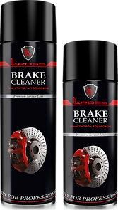
BRAKE CLEANER
ОЧИСТИТЕЛЬ ТОРМОЗОВ
Новейший высококачественный продукт для очистки тормозных механизмов и деталей сцепления. Разработан с учетом опыта и пожеланий профессионалов в области обслуживания автомобилей. Продукт прошел успешные испытания и поставляется на дилерские центры: Porsche, Mercedes-Benz, Audi, Land Rover, Jaguar, Volvo, Toyota и многие другие. L-Ross BRAKE CLEANER не оставляет масленых пленок, следов и подтеков. Не имеет токсичного запаха, быстро испаряется.
650ML (500ML) LR-001-PR
800ML (600ML) LR-001-PR.MAX
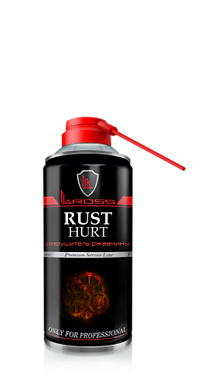
RUST HURT
РАЗРУШИТЕЛЬ РЖАВЧИНЫ
Профессиональный высококачественный продукт с высокой проникающей способностью для быстрого демонтажа сильно заржавевших деталей с резьбовым соединением. RUST HURT с легкостью проникает в глубь поврежденного соединения, вытесняет влагу, агрессивно воздействует на ржавчину, обеспечивает защитный слой, препятствующий дальнейшему образованию коррозии.Продукт оснащен специальным распылителем для точечного и чистого нанесения состава, даже в самых труднодоступных местах. L-Ross RUST HURT испытан и применяется в дилерских центрах ведущих автомобильных марок
505ML (400ML) LR-004-PR
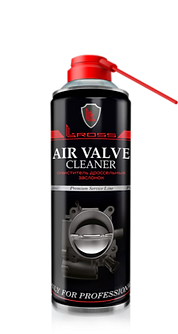
AIR VALVE CLEANER
ОЧИСТИТЕЛЬ ДРОССЕЛЬНОЙ ЗАСЛОНКИ/EGR
Профессиональный высококачественный продукт для быстрой очистки дроссельной заслонки впускного тракта дизельных и бензиновых двигателей, а также очистки системы рециркуляции отработавших газов (датчик EGR). AIR VALVE CLEANER быстро и эффективно справляется с поставленной задачей, не оставляя загрязнений. Продукт оснащен специальным распылителем для применения состава, даже в самых труднодоступных местах.L-Ross AIR VALVE CLEANER испытан и применяется в дилерских центрах ведущих автомобильных марок
650ML (500ML) LR-003-PR
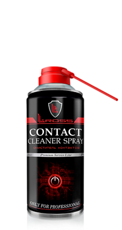
CONTACT CLEANER SPRAY
ОЧИСТИТЕЛЬ ЭЛЕКТРОКОНТАКТОВ
Профессиональный состав предназначенный для эффективной очистки различного рода электроконтактов от окислов, коррозии, нагара и других низкотокопроводных загрязнений, с целью восстановления электроконтакта в цепи.L-Ross CONTACT CLEANER SPRAY испытан и применяется в дилерских центрах ведущих автомобильных марок
505ML (400ML) LR-011-PR
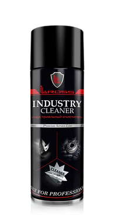
INDUSTRY CLEANER
ИНДУСТРИАЛЬНЫЙ ОЧИСТИТЕЛЬ
Профессиональный высококачественный продукт для быстрого и безопасного снятия транспортировочных наклеек, удаления битума, смол, остатков силикона, различных смазочных материалов, восковых консервационных покрытий с деталей автомобиля и других технических загрязнений.L-Ross INDUSTRY CLEANER испытан и применяется в дилерских центрах ведущих автомобильных марок
650ML (500ML) LR-002-PR
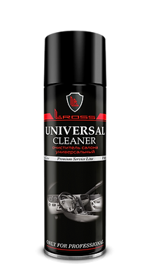
UNIVERSAL CLEANER
ОЧИСТИТЕЛЬ САЛОНА УНИВЕРСАЛЬНЫЙ
Профессиональный высококачественный пенный продукт для быстрой и удобной очистки салона автомобиля. UNIVERSAL CLEANER справляется с пятнами, никотиновым налетом, потожировыми следами и другими легкими загрязнениями. Не содержит силикона! Подходит для использования на приборной панели, обивке, стеклах.
650ML (500ML) LR-013-PR
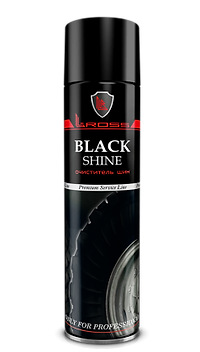
BLACK SHINE
ОЧИСТИТЕЛЬ ШИН
Профессиональный высококачественный пенный продукт, предназначенный для придания стойкой новизны и легкого блеска внешнему виду колесных шин. Специальная формула BLACK SHINE возвращает шинам первоначальный цвет, придает антистатические и водоотталкивающие свойства.
800ML (600ML) LR-017-PR
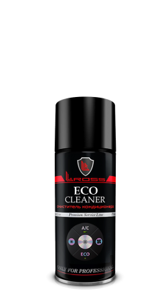
ECO CLEANER
ОЧИСТИТЕЛЬ КОНДИЦИОНЕРА
Профессиональный высококачественный продукт, предназначенный для быстрой и эффективной дезинфекции системы кондиционирования и салона автомобиля (без механического вмешательства в систему). ECO CLEANER имеет специальный антибактериальный, гипоаллергенный состав, эффективно устраняющий неприятные запахи (табака, животных, затхлости), улучшает микроклимат в салоне.
210ML (150ML) LR-012-PR
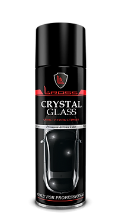
CRYSTAL GLASS
ОЧИСТИТЕЛЬ СТЕКОЛ
Профессиональный высококачественный продукт для быстрой, тщательной очистки автомобильных стекол, зеркал и фар. CRYSTAL GLASS эффективно справляется со следами дорожного налета, остатков насекомых, потожировых следов, никотиновых отложений. Не оставляет разводов придает стеклу новизну и блеск.
650ML (500ML) LR-014-PR
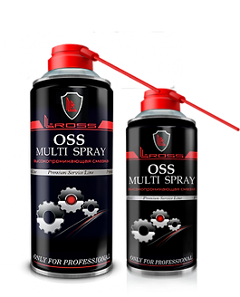
OSS MULTI SPRAY
ВЫСОКОПРОНИКАЮЩАЯ СМАЗКА
Профессиональный высококачественный продукт с низкой вязкостью для смазки узлов и механизмов с большим количество деталей. Разработанный специальный химический состав OSS позволяет смазке быстро попасть в глубь механизма восстанавливая подвижность его деталей. Облегчает демонтаж, вытесняет влагу, предотвращает ржавчину, ликвидирует скрип.Продукт оснащен специальным распылителем для точечного и чистого нанесения состава, даже в самых труднодоступных местах.L-Ross OSS MULTI SPRAY испытан и применяется в дилерских центрах ведущих автомобильных марок
505ML (400ML) LR-008-PR
210ML (150ML) LR-008-PR MIN
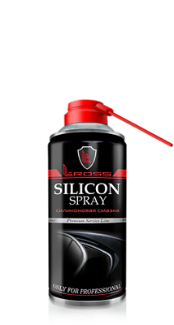
SILICON SPRAY
СИЛИКОНОВАЯ СМАЗКА
Профессиональный высококачественный продукт для обработки резиновых, металлических, пластмассовых деталей и поверхностей с целью предотвращения их примерзания, истирания и растрескивания. Препятствует образованию ржавчины. Водоотталкивающие, смазывающие и антистатические свойства L-Ross SILICON SPRAY делают его эффективным в самых разнообразных отраслях промышленности. Интервал рабочих температур от –40°С до +200°С
Продукт оснащен специальным распылителем для применения состава даже в самых труднодоступных местах. L-Ross SILICON SPRAY испытан и применяется в дилерских центрах ведущих автомобильных марок
505ML (400ML) LR-005-PR
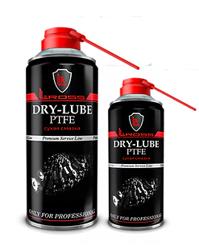
DRY-LUBE PTFE
СУХАЯ СМАЗКА
Профессиональный, высококачественный продукт для сухой смазки цепных и зубчатых приводов, направляющих автомобильных кресел, петель, люков, антенн и других взаимодействующих при небольших и средних нагрузках деталей. Безопасен для металла, пластмассы, резины, стекла, дерева.
DRY-LUBE PTFE обладает высокой проникающей, водоотталкивающей способностью, препятствует возникновению скрипа, налипанию пыли, истиранию соприкасающихся поверхностей
505ML (400ML) 505ML (400ML)
210ML (150ML) LR-007-PR MIN
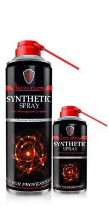
SYNTHETIC SPRAY
СИНТЕТИЧЕСКАЯ СМАЗКА
Профессиональный высококачественный продукт для устойчивой смазки цепных и зубчатых приводов, шарниров, петель, направляющих автокресел и других нагруженных соединений. Высокотехнологичный состав L-Ross SYNTHETIC SPRAY обладает сверхсильной адгезией, высокой проникающей способностью, влагоотталкивающими свойствами, устойчив к истиранию.
Интервал рабочих температур от –37°С до +200°С
Продукт оснащен специальным распылителем для точечного и чистого нанесения состава, даже в самых труднодоступных местах.
L-Ross SYNTHETIC SPRAY испытан и применяется в дилерских центрах ведущих автомобильных марок
210ML (150ML) LR-006-PR MIN
650ML (500ML) LR-006-PR
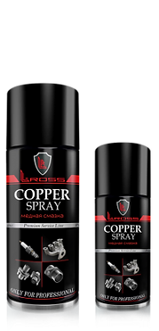
COPPER SPRAY
МЕДНАЯ СМАЗКА
Профессиональный высококачественный продукт, с большим содержанием меди, разработанный для обработки деталей и соединений, подвергающихся воздействию высоких температур (−40ºС до +990ºС) и давлению. L-Ross COPPER SPRAY предназначен для обработки деталей тормозных механизмов, ступиц, колесных болтов и гаек, деталей систем выхлопа, резьбовой части свечей зажигания. Имеет высокую адгезию, предотвращает прикипание, износ и коррозию деталей.
L-Ross COPPER SPRAY испытан и применяется в дилерских центрах ведущих автомобильных марок
210ML (150ML) LR-010-PR MIN
505ML (400ML) LR-010-PR
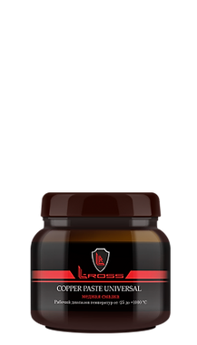
COPPER PASTE UNIVERSAL
МЕДНАЯ СМАЗКА
Профессиональный высококачественный продукт, разработанный для обработки деталей и соединений, подвергающихся воздействию высоких температур и давлению. Применяется при монтаже систем выхлопа, на тыловой (нерабочей) части колодок, посадочной поверхности ступиц, на колесных болтах и гайках. Имеет высокую адгезию, предотвращает прикипание, износ и коррозию деталей.
400G (BOTTLE) LR-010-PR.BT
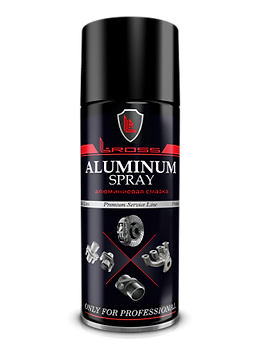
ALUMINUM SPRAY
АЛЮМИНИЕВАЯ СМАЗКА
Профессиональный высококачественный продукт, разработанный для обработки деталей и соединений, подвергающихся воздействию высоких температур (от-60°С до +900°С), а также давлению. Обладает антизадирными свойствами. Применяется для обработки и крепления деталей тормозных механизмов, ступиц, колесных болтов и гаек, деталей систем выхлопа, а также в местах, где использование медной смазки не желательно. Имеет высокую адгезию, предотвращает прикипание, износ и коррозию деталей.
505ML (400ML) LP-015-PR
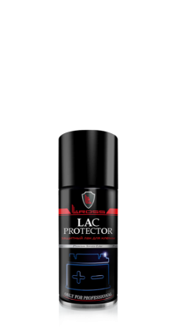
LAC PROTECTOR
ЛАК ДЛЯ ЗАЩИТЫ КЛЕММ
Профессиональный высококачественный продукт, предназначенный для стойкой консервации клемм аккумуляторных батарей, полюсных зажимов и других автомобильных электроконтактов, с целью их надежной защиты от окислов, ржавчины и загрязнений. Прочное термостойкое покрытие синего цвета надежно защищает электроконтакты от воздействия пыли, реагентов, электролита, влаги и скачков температур.
L-Ross LAC PROTECTOR испытан и применяется в дилерских центрах ведущих автомобильных марок
210ML (150ML) LR-009-PR
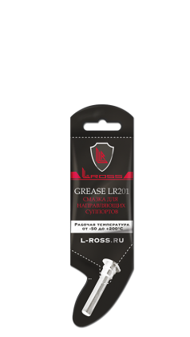
GREASE LR201
СМАЗКА ДЛЯ НАПРАВЛЯЮЩИХ СУППОРТОВ
Профессиональная высокотемпературная смазка, не вступающая в реакцию с другими смазывающими продуктами и резиновыми деталями, что обеспечивает долговременную защиту от залипания, закоксовывания и заклинивания направляющих суппортов.
GREASE LR201 обеспечивает равномерный износ колодок и безопасное торможение. Интервал рабочих температур от –50°С до +200°С
5G (STICK) LR-021-SM
100G (TUBE) LR-022-SM
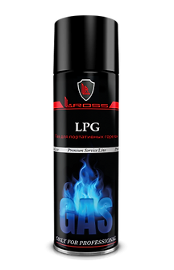
LPG
ГАЗ ДЛЯ ПОРТАТИВНЫХ ГОРЕЛОК
Высокопроизводительная очищенная газовая смесь, предназначенная для использования в портативных газовых горелках, при проведении ремонтных работ на станциях технического обслуживания, когда необходимо и допускается применение данного оборудования. Допускается использование баллона при температуре от -20°С до +40°С.
650ML (500ML) LR-016-PR
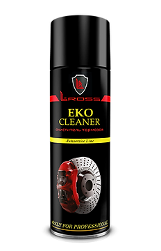
EKO CLEANER
ОЧИСТИТЕЛЬ ТОРМОЗОВ
Профессиональный продукт для быстрой, тщательной очистки и обезжиривания тормозных механизмов, деталей сцепления, а также любых металлических деталей автомобиля и промышленного оборудования во время регламентного обслуживания и ремонта. Удаляет отработанные консистентные смазки, масла, тормозные жидкости, битум, некоторые клеевые остатки. Не оставляет следов и подтеков. Не имеет токсичного запаха, быстро испаряется. Отлично подходит для применения на станциях технического обслуживания автотранспорта.
650ML (500ML) LR-001-EK
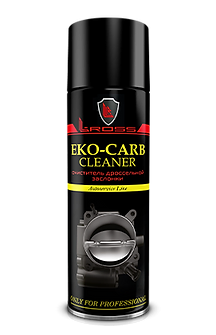
EKO-CARB CLEANER
ОЧИСТИТЕЛЬ ДРОССЕЛЬНЫХ ЗАСЛОНОК
Профессиональный продукт для быстрой очистки и обезжиривания механизмов карбюратора, жиклеров, воздушных каналов, дроссельных заслонок впускного тракта дизельных и бензиновых двигателей при регламентных работах и ремонте. Отлично подходит для применения на станциях технического обслуживания автотранспорта.
650ML (500ML) LR-003- EK
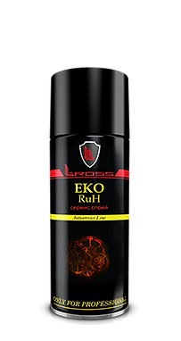
EKO RUH
CЕРВИС СПРЕЙ
Профессиональный продукт с высокой проникающей способностью для облегчения демонтажа резьбовых соединений и прикипевших деталей. Разработанный состав с легкостью проникает в глубь поврежденного соединения, вытесняет влагу, ликвидирует скрип, образует тонкий защитный слой препятствующий дальнейшему коррозированнию. Отлично подходит для применения на станциях технического обслуживания автотранспорта.
505ML (400ML) LR-008- EK
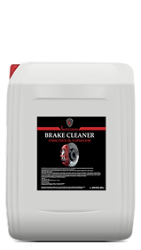
BRAKE CLEANER
ОЧИСТИТЕЛЬ ТОРМОЗОВ
Профессиональный, высококачественный продукт для быстрой, тщательной очистки и обезжиривания тормозных механизмов и деталей сцепления, а также любых металлических деталей автомобиля во время технического обслуживания
20L (CAN.) LR-001-PR.20

LR-CLEAN
ПАСТА ДЛЯ ОЧИСТКИ РУК
Профессиональная, высококачественная паста-скраб для очистки рук LR-SKRUB c абразивом, эффективно справляется с устойчивыми трудно смываемыми загрязнениями, не вызывает раздражений, смягчает кожу рук.
11L (PAIL) LR-030-PS
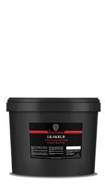
LR-SKRUB
ПАСТА ДЛЯ ОЧИСТКИ РУК
Профессиональная, высококачественная паста для очистки рук LR-CLEAN c абразивом, эффективно справляется с устойчивыми трудно смываемыми загрязнениями, не вызывает раздражений, смягчает кожу рук.
11L (PAIL) LR-030-P
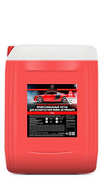
АГЕНТ CHIP
ПРОФЕССИОНАЛЬНЫЙ АВТОШАМПУНЬ
Профессиональный, высококачественный состав для бесконтактной мойки автотранспорта Агент Chip неагрессивен к лакокрасочной поверхности и наружным деталям автомобиля. Легко смывается водой, не имеет токсичного запаха. Степень разбавления: 1:50 - 1:80 (1:5 – 1:8)
20L (CAN.) LR-040-ASH
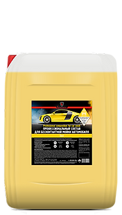
АГЕНТ CHIP
ПРОФЕССИОНАЛЬНЫЙ АВТОШАМПУНЬ
Профессиональный, высококачественный состав для бесконтактной мойки автотранспорта. Агент Deil неагрессивен к лакокрасочной поверхности и наружным деталям автомобиля. Легко смывается водой, не имеет токсичного запаха. Степень разбавления: 1:30 - 1:50 (1:3 – 1:5)
20L (CAN.) LR-040-ASH
ФУТБОЛКА TM «L-ROSS»
Футболка ТМ «L-ROSS» имеет стильный дизайн, сделана из дышащей натуральной ткани. Применима для использования на работе, в быту, для занятий активными видами спорта.
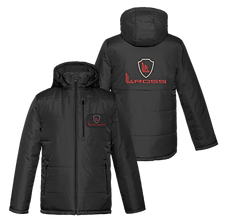
КУРТКА TM «L-ROSS»
Теплая куртка ТМ «L-ROSS» имеет стильный дизайн, сделана из надежной ткани. Применима для использования на работе, в быту, на отдыхе.
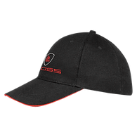
БЕЙСБОЛКА TM «L-ROSS»
Бейсболка ТМ «L-ROSS» Имеет стильный, современный вид. Применима в работе, быту, для занятий активными видами спорта.
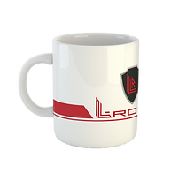
КРУЖКА TM «L-ROSS»
Кружка ТМ «L-ROSS» очень удобная ручка, оптимальный размер, стильный вид.
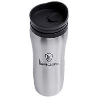
СТАКАН «НЕПРОЛИВАЙКА»
Стакан «непроливайка» с логотипом ТМ «L-ROSS», только для активных, энергичных людей, ценящих надежный комфорт.
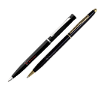
РУЧКИ TM «L-ROSS»
Ручки ТМ «L-ROSS» надежно прослужат до окончания своего срока службы.

ЕЖЕДНЕВНИК TM «L-ROSS»
Ежедневник ТМ «L-ROSS» для далеко идущих планов, незаменим в офисе и при проведении деловых встреч.
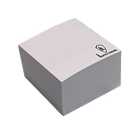
КУБАРИКИ TM «L-ROSS»
Кубарики ТМ «L-ROSS» незаменимы для фиксации планов, идей, заметок.
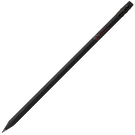
КАРАНДАШ TM «L-ROSS»
Карандаш ТМ «L-ROSS» оптимален для офиса, стройки и дома.
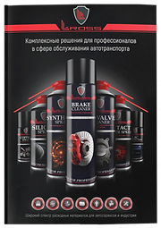